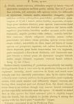

Click on images to enlarge
{kind=link}

Fig. 1. Paropsis tatei, description
Name
Paropsis tatei Blackburn, 1896
Corresponds to
No known correspondence with any of the species codes.
Diagnosis and Notes
Blackburn (1896) deals with T. tatei as part of his 'subgroup ii' (i.e., those species without "strongly marked characters", whose greatest height is not or scarcely in front of the middle of the elytral margin and whose elytra are depressed under the humeral callus). Within that group, he characterises it as:
A. Inner edge of humeral callus distinctly nearer to lateral margin of elytra than to suture;
BB. Sides of prothorax not at all explanate;
C. Elytra not having a well defined transverse wheal-like ridge;
DD. form less wide [not nearly circular], elytra not wider than long;
EE. Prothorax widening from apex almost to base; base much wider than front margin;
F. Puncturation of elytra not particularly fine;
G. Elytral verrucae large, scarcely elevated, isolated, very nitid and black.
Bryant (1923) synonymised tatei with P. seriata Germar, without providing any justification. There is be some doubt about the synonymy, as the length of the male type of P. tatei is given as 4⅕ lines by Blackburn, while P. seriata comes in at 3 lines, a difference of about 2.5 mm. There are no species of Trachymela of that size that encompass such a range in sizes. This is a relatively large species with large, isolated black verrucae, resembling T. pustulosa.
Type specimen
Not examined (does not seem to be in BMNH).
Original description
Translation of original description (Figure 1) by ChatGPT, 03/2026:
♂. Oval, less convex, of greater height (in lateral view), with the highest point placed at the middle of the elytral margin; shiny; coloured almost as in P. pustulosa, but with the antennae reddish, scarcely infuscate toward the apex, and with the elytral warts much smaller and elongate. Head more finely and more closely, slightly rugulosely punctate. Pronotum longer than wide as about 2⅖ to 1, strongly narrowed anteriorly, from the apex long broadened behind the middle, behind the apex not transversely impressed, rather closely, fairly strongly, and somewhat rugulosely (very rugulose at the sides) punctate; sides moderately rounded, not at all flattened, posterior angles very obtuse; scutellum smooth, strongly convex. Elytra rather coarsely, somewhat in rows, not very closely punctate (coarser at the sides, toward the apex much more closely punctate), the interspaces on the disc not (but toward the sides and toward the apex quite distinctly) rugulose; distinctly depressed below the humeral callus; behind the base broadly and scarcely transversely impressed, the marginal part not distinct from the disc; the humeral callus more distant from the suture than from the lateral margin; basal ventral segment somewhat smooth. Length 4⅕ lines [~8.9 mm]; width 3 lines [~6.4 mm].
References
Blackburn, T. 1896, "Revision of the genus Paropsis. Part I", Proceedings of the Linnean Society of New South Wales, vol. 21, no. 4, 637-693 (page 671).
Bryant, G.E. 1923, "Notes on the synonymy of Phytophaga (Coleoptera)", Annals and Magazine of Natural History, ser. 9, vol. 12, 130-147 (page 139).
Copyright © 2026. All rights reserved.